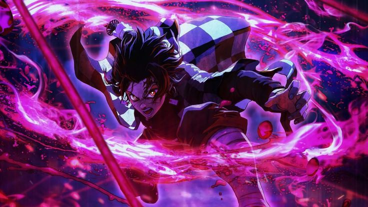

Know about the Founder
About Deadly Knight
Some content goes here about Founder...
Admin's kind words on Founder
By Kirito
My dear Deadly, Reflecting on our online friendship over the past couple of weeks, I must say that it has been an absolute joy to have you as a companion. You embody the essence of a sigma and I of chad, which spreads coolness in the air.
However, what truly captivates my heart is the side of you that is understanding, calming, and genuinely kind, our competition of playfully roasting each other has woven "Yes yes , woven... I didn't get a better term" a thread of laughter and happiness into our conversations making every interaction an memorable event.
It's not just this, deadly that makes our bond special, it's the moments we spend together, listening to music like murder in my mind, disaster in our voice chats, those shared musical experiences create a unique connection that words alone cannot express.
Your taste in music is impeccable, and so is mine, lol, mine is better of course and it's a delight to explore new songs and artists with you, (Those sigma ones) with each melody, our friendship grows stronger than ever, that is what I hope, and anyways, thank you for being the kind of friend who can both challenge (Exactly) and comfort (Just kidding, lol... just kidding again) me, bringing so much light and joy into my life, here's to many more music-filled adventures (Of course) and an enduring bond.